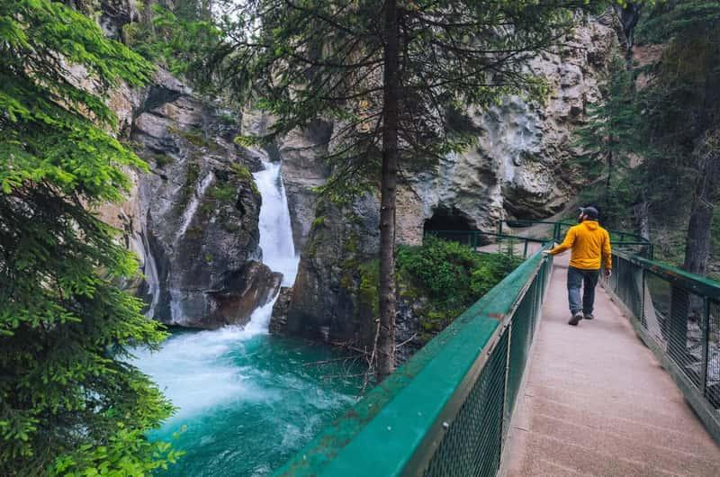

🥾 Lower Falls
Johnston Canyon

🏞 기대 풍경
- 🌊 Lower Falls 폭포
- 🪨 깊은 석회암 협곡
- 🌉 절벽 위 보드워크
- 🕳 폭포 전망 터널
- 📸 대표 포토스팟
📏 기본 정보
🚻 편의시설
- ✔ 화장실 (입구)
- ✔ 주차장
- ✔ 벤치 일부 구간
- ✖ 식음료 판매 없음
🎒 준비물
- 👟 미끄럽지 않은 운동화
- 🧥 가벼운 바람막이
- 💧 물
- 📷 카메라
💡 여행 Tip
- ✔ 폭포 앞 전망 터널은 통로가 좁으므로 양보하며 이동하세요.
- ✔ 보드워크는 항상 젖어 있을 수 있으니 미끄럼에 주의하세요.
- ✔ 오전 이른 시간이나 저녁에는 비교적 한산하게 관람할 수 있습니다.
- ✔ Lower Falls만 둘러보고 돌아와도 존스턴 캐년의 매력을 충분히 느낄 수 있습니다.
📍 Google Maps
🥾 트래킹 코스 보기